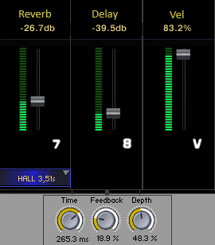
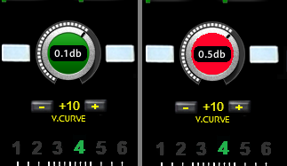

TOCA SAMPLE

Um novo conceito para Samples
Diferente das livrarias que já estamos acostumados a consumir, apresento uma nova proposta que é o Toca Sample.
Nas livrarias recebemos centenas de samples assim como nos velhos discos de vinil várias músicas, mas às vezes queríamos uma sequência de nossas músicas prediletas onde cada música estava em um vinil diferente, a solução era o velho toca fita, onde muitas vezes gravávamos com uma qualidade questionável.
E foi para atender minha necessidade de reunir meus samples prediletos em um só lugar e com todos os controles que eu poderia precisar no primeiro plano que iniciei despretensiosamente este projeto entre uma corrida e outra como motorista de Huber.
O programa não vem com Samples, assim como toca fita tbm não vinha com as fitas nem as musicas, mas nesta primeira versão beta, vem com suporte para 20 Samples, que vc pode escolher entre os que vc já tem, e importar para ele.
O processo é simples para que já lida com Kontakt mas pode ser um pouco complicado para iniciantes, porem irei descrever aqui em detalhes como fazê-lo.
Características e controles do toca Sample
Apesar de vir com 6 canais, não aconselho usar todos ao mesmo tempo pois, dependendo do seu equipamento o consumo de CPU pode ficar elevado, a ideia de 6 canais é já ter a mão um timbre que vc possa precisar já na musica seguinte, conveniente pra quem toca ao vivo, porem tem um menu em cada canal para escolher um dos 20 timbres de sample importados por vc.

Na imagem acima temos os controles de volume, que acende no final do curso, balanço (Pan) liga e desliga do canal em ON e o liga e desliga no próprio pedal (acende quando pisamos no pedal) em cima deste ajustamos as oitavas"8ª",note que alguns controles na posição inicial ficam sem cor. Abaixo dos pedais, temos a seleção da nota referente a tecla que inicia a atuação do canal no teclado, e a nota referente a tecla que finaliza a atuação do canal no teclado e entre estes, ON que liga e desliga esta função, e o canal passa a atuar ou não em todas as teclas do teclado.

Na fig acima a esquerda, temos o seletor de 6 canais , um controle deslizante na horizontal com 6 posições, onde escolhemos canal que vamos ajustar os demais controles EQ e FX. Os knobs Left e Right também atuam para esquerda e direita.
O knob do meio que acende em verde "SM" (solo memoria) serve para silenciar os demais canais e vc pode correr os outros canais, via seletor, solando um de cada vez, e quando vc desligar o "SM" vc restabelece os canais do modo em que estavam ligados antes. Os knobs "S" solo, que aparecem em cada canal, podem solar mais de um canal ao mesmo tempo, dica: em vez de desligar o solo acione 2x o "SM" que os canais voltaram como estavam antes.
Obs: Os controles podem ser mapeados com seu controlador a exceção apenas "Vel Range" que veremos mais a diante. Apontando mouse no controle temos no rodapé do Kontakt uma breve descrição do controle> Segurando a tecla Ctrl e clicando em cima do controle ele vai retorna posição padrão inicial.

Na figura acima encontramos os filtros e efeitos FX/EQ. Partindo da esquerda, temos um Menu onde selecionamos um de 31 Filtros diferentes, LP que corta frequências altas, HP que corta frequências baixas, entre outros filtros e uma imagem de referencia ao efeito selecionado, em baixo destes, CutX que define o ponto de corte da frequência selecionada e ResoX que ajusta a intensidade da ressonância no ponto de corte. Continuando encontramos "Cut" e em cima deste também em marrom o seu respectivo "Reso" ambos atuam como CutX e ResoX, citado anteriormente, porem e um filtro único SV LP 2. A sua direita vem "Chorus" (ajusta a profundidade do efeito) e em cima também em vermelho "Amount" (Ajusta o quanto do efeito de chorus é misturado com o som original). Seguido ainda na figura acima, "Phaser" ajusta a profundidade do efeito e "Speed" que ajusta a velocidade do efeito de Phaser, ambos em Laranja

Em amarelo temos "Low" (controle de graves) em cima deste "L"" controla a faixa de frequência que Low atua, o mesmo para "Mid"(médios) "M" em verde e "Hig" (agudos)"H" em azul. Na sequencia iniciamos o ADSR (Ataque, Decai, Sustain, Release) sendo "ATA"(ataque) em lilas e "Dec", "Sus" e "Rel" em cinza. Por ultimo chegamos ao "Trem" (Tremulo) e "Vibrat"(Vibrato) ambos em laranja (costumo usar estes dois na roda de modulação mas os cut e reso tbm da um efeito legal)
Note que, cores e proximidade se correlacionam com os controles. Todos os controles se ajustam conforme vc seleciona o canal ou memoria, ele lembra da posição que aquele canal ou memoria selecionado estavam
Em baixo a direita temos os controles de "Reverb" e um menu em baixo, onde selecionamos o tipo de reverb. ao lado direito temos o "Delay"(Eco) e em baixo deste Seus respectivos ajustes, "Time" (tempo entre repetição), "Feedback" (quantidade de repetição), e Depth (intensidade de modulação). Finalizando a direita inferior "Vel" Velocidade de toque (Touch), quanto mais elevado este controle, maior a sensibilidade das teclas do canal e por consequência menor volume, quando baixamos temos que atentar que o volume aumenta, podendo distorcer na saída, por consequência as teclas tbm perdem sensibilidade (vc toca leve e sai mais alto) diminuindo a curva de resposta (interessante baixar a sensibilidade e volume para PAD"s, cama...).

Na figura acima a esquerda temos transpose que aumenta e diminui até 12 semitons podemos tbm selecionar com o mouse entre o "+" e o "-" . A direita temos "Vel Range" cada canal alinhado com um, são dois controles em forma de números, este selecionamos apenas com o mouse, o primeiro,"1" na imagem, só deixa tocar na velocidade acima do valor selecionado e o segundo, "127" na imagem, só deixa tocar na velocidade abaixo do selecionado (vc pode selecionar um instrumento quando toca leve e outro quando tocar mais forte) em cima destes deixei apenas como referencia, alinhadas com os canais (não fazem nada) o desenho do meu mini controlador, onde iniciei este projeto e no intuito de que outros que tenham controladores iguais ou parecidos possam usar as respectivas tecla do controlado para alguma função por canal e se posicionar melhor
 Finalizando a apresentação temos o volume geral que alerta quando passamos de 0,2dB e por ultimo "V.CURVE" Curva de velocidade, (sensibilidade)aplica-se o mesmo principio da "Vel" por canal só que este é geral do teclado, com range de -50 a +50, nesta imagem esta ajustado para meu teclado em +10.